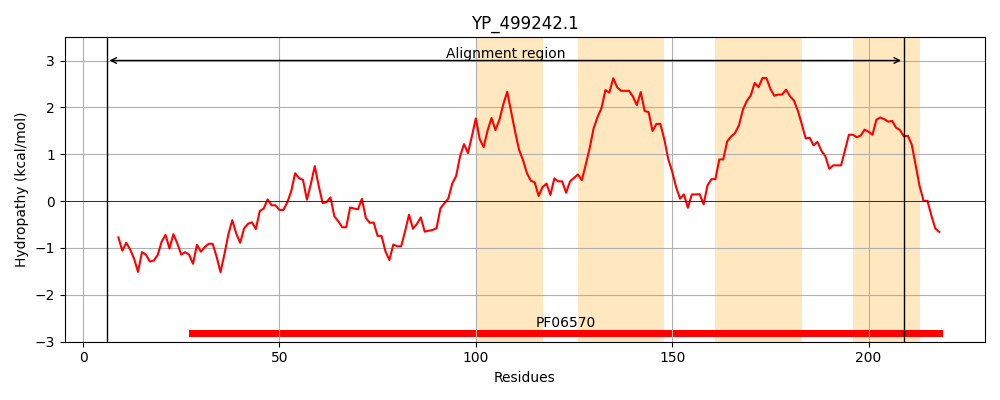
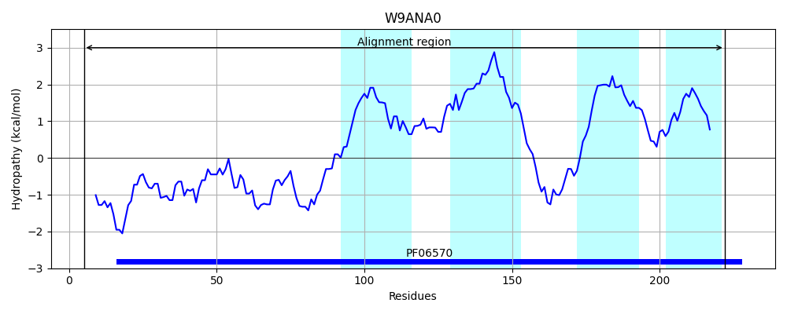
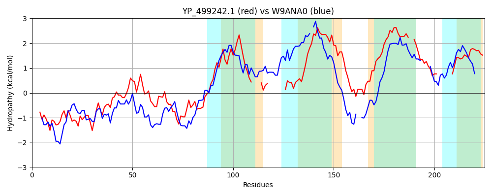

Hit Accession: W9ANA0
Hit TCID: 9.B.182.1.2
Hit Description: gnl|BL_ORD_ID|20698 gnl|TC-DB|W9ANA0|9.B.182.1.2 Uncharacterized protein OS=Oceanobacillus picturae GN=BN988_02633 PE=4 SV=1
Mach Len: 225
e:0.000000
Query TMS Count : 4
Hit TMS Count: 4
TMS-Overlap Score: 2.950000
Predicted Substrates:None
BLAST Alignment:
Score: 174 , Bit scores: 71 bits, E-value: 3.1e-15, Alignment length: 225, Percentage identity: 25
Query: 6 QLTKENNVKSLRLSNTDREIFENYMTYMRSDFRVNPHDTELIINRILKQLLSAEQHGLLALDFFNHDPKAHAIKELKAMPNETFKNIFKYIYQHIVLLIGIVSFLKGFLG----FFME--------KNGSNLYFVSFPFSVVVGFFIVFLFIWFSFKTIQLQCFNNSNWIWIFTYLAIILLIVGFFYV--FFIPQSLLAFGP-------YIQVSNWVFIIFSFIV 209
++ + NN K RL+ + + +E+ + Y+R + + TE ++ +L+ LL A++ G A + F DPKA+ + ++ +P E KN I I+ +G + G LG +F + GS L + +++G FI+ + W T + NW+ AI +G V FF+P +FG Y+ + +F +FSF++
Sbjct: 5 EIIELNNEKRTRLTEHNLKYYEDMLLYIRLNGNKSEQQTEEVLLEMLEHLLQAQEEGKTAEEVFGDDPKAYCKEVVEEIPTENRKNQASLIMMVILQFLGFFAGSYGILGTALNYFFDIGSALTTFSIGSGLVILGIDL-LLLGAFILAILKWIKQSTFSKK--ETKNWVEFLQVWAISTAFIGLIVVIHFFMP----SFGKEISIPTYYLAILGVIFYVFSFLM 222 | Protein Hydropathy Plots: |
|---|
|  |  |
Pairwise Alignment-Hydropathy Plot:
|
|---|
|  |